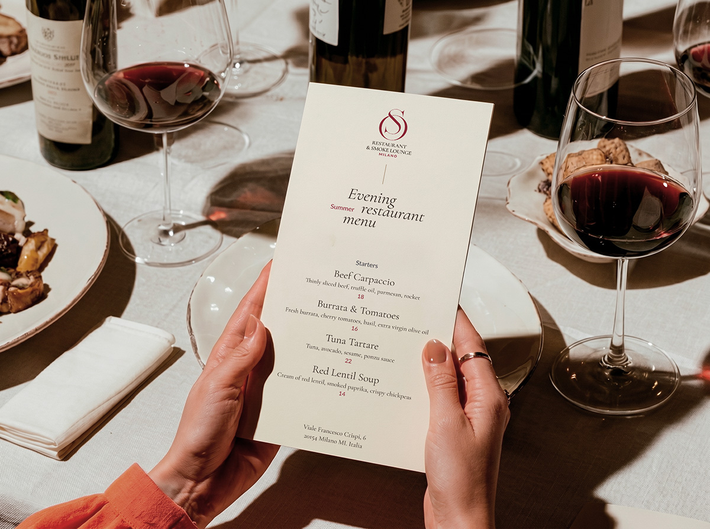

Логотип, система именования, цвет, типографика. Визуальный язык бренда, построенный на основе утверждённой стратегии.
01 — Задача
Не сломать. Уточнить.
В рамках работы над бренд-платформой была определена новая стратегическая позиция SO Milano — ресторан и кальянный лаунж, где сильная кухня, вечерняя атмосфера и ритуал кальяна существуют без жанровых клише.
На основе этой платформы потребовалось обновить знак: сохранить узнаваемую форму, которую аудитория уже знает, и привести его в соответствие с новым видением — более тонким, уверенным и масштабируемым.
03 — Система именования
Один знак. Четыре версии.
Раньше заведение называлось SO Milano — и это имя работало как единое целое, без возможности роста.
Теперь логотип — это система из четырёх состояний. Каждое решает свою задачу и используется в своём контексте.
Один знак. Четыре версии. Бесконечная гибкость.
Полное название бренда — SO Restaurant & Smoke Lounge.
Оно появляется там, где нужно объяснить, что это за место: в описаниях, на сайте, в соцсетях, в навигации. Это не слоган — это точная формулировка того, чем является заведение: рестораном и кальянным лаунжем одновременно, без перекоса в одну сторону.
Монограмма
Монограмма + формат
Монограмма + город
Полный логотип
04 — Фирменные цвета
Палитра
Палитра SO строится на двух образах, которые живут в самом продукте: свет и дым. Каждый оттенок считывается и на светлом носителе, и на тёмном, и работает в обоих режимах заведения.
Зола
#F0E8DF
Охра
#D4B84A
Кьянти
#8B2635
Пепел
#A89278
Уголь
#3A2E28
Ночь
#1E1A16
05 — Типографика
Шрифтовая пара
Выбор шрифтов строился от характера. Нужна была пара, которая работает вместе как система — и при этом разговаривает с логотипом и палитрой на одном языке.
Заголовочный
Cormorant Garamond
Восходит к французско-итальянской типографской традиции XVI века. Высокий контраст штриха, каллиграфические засечки, выразительный курсив — всё это визуально рифмуется с природой логотипа SO.
Текстовый
Lato
Гротеск для текстовых блоков, подписей и интерфейсов. Нейтральный по характеру — не конкурирует с Cormorant, а держит систему. Обеспечивает читаемость в любом размере.
06 — Бренд в пространстве
Носители
Логотип и фирменный стиль в реальных носителях — меню, упаковка, полиграфия. Система работает последовательно на любом материале.

Файлы
Скачать логотип
Все версии логотипа в одном архиве — SVG, PNG на светлом и тёмном фоне, все четыре состояния системы.